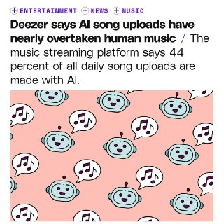
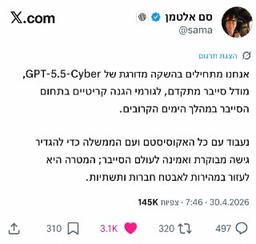

WIREDנמוכה04.05.2026, 00:00
Build American AI, a nonprofit linked to a super PAC bankrolled by executives at OpenAI and Andreessen Horowitz, is funding a campaign to spread pro-AI messaging and stoke fears about China.
אימות 1
Build American AI, a nonprofit linked to a super PAC bankrolled by executives at OpenAI and Andreessen Horowitz, is funding a campaign to spread pro-AI messaging and stoke fears about China.

Messages presented at trial reveal how Zilis, the mother of four of Musk’s children, acted as an intermediary between him and OpenAI.
Tensions flared on the third day of trial in Musk v. Altman as OpenAI’s lawyers cross-examined Musk.

מ-IBM, דרך סיילספורס ועד לסטארט-אפים ישראלים, בחלק מחברות ההייטק עוברים לגייס לפי כישורים, לא לפי ותק וניסיון, וכך, סטודנטים ואקדמאים טריים עם גישה ל-AI מצליחים לעקוף את המסלול המסורתי - היישר לתפקידי המפתח
הכירו את העדכון החדש ב-Codex: נוספו חיות מחמד לממשק. 🐶 הפקודה /pet תוסיף חיית מחמד מונפשת לשולחן העבודה שלכם. היא תרחף מעל החלונות הפתוחים ותציג בזמן אמת את הפעולות שה-agent מבצע.

חברת OpenAI פרסמה בשקט בגרסת קוד פתוח כלי למניעת הדלפת נתונים עבור מערכות בינה מלאכותית 🛡️ בפלטפורמת Hugging Face הושק ה-Privacy Filter — מודל המזהה ומסיר פרטים אישיים מן הטקסט טרם העברתם למערכת ה-AI 📝 הכלי מזהה מגוון רחב של נתונים: שמות, כתובות דוא"ל,

תכירו את Qwen3.6-27B: המודל החדש שטורף את הקלפים! 🚀🧠 עליבאבא משחררת דגם "צפוף" (Dense) ופתוח בנפח 27B פרמטרים, והוא מוכיח שגודל זה לא הכל. מה חדש מתחת למכסה המנוע?

חיבור יכול להתבצע ממש בקלות דרך Zapier. קיים קונקטור לקלוד דסקטופ וזה פשוט מושלם! אפשר לקבל תובנות בצורה ברורה, לחבר סקילים ולייצר טקסטים ומודעות מעוצבות בקלות יתירה (עם ננו בננה) - מה שאמור להוביל ליותר המרות ויישום יעדים עסקיים - ולהצדיק את השימוש בקלוד

תי עם AI ש״נחשף״ כשעוברים על התמונה עם העכבר ויצא ממש מגניב!
ה :3 טיפשונת <– וזה כמעט כל הפרומפט (המקור נמצא בקישור). למה זה עובד: בתוך המודלים מוטמעים מעין "היתרים" – לדבר על נושאים שהיום הם מותרים אך היו אסורים בעבר (זכויות מיעוטים, תרבות להט"בית וכו').
היגספילד (פלטפורמה ליצירת תמונות ווידאו עם כל המודלים בשוק) משחררת שרת MCP כדי שתוכלו לחבר את הסוכן האהוב עליכם והוא יוכל ליצור לכם סרטונים ותמונות, יש שם גישה גם לSeedance 2.0 ו GPT Images 2.0.

יצירת התוכן הייחודי שלכם. 💼 מפרסמים: מצאו את הערוצים המדויקים לקהל שלכם, נהלו קמפיינים מרובי-ערוצים, ומדדו ROI אמיתי בזמן אמת. ✨ פלטפורמה אחת. שני צדדים מרוויחים.

הנה הדרך לבצע אוטומציה של כל התהליכים ב-VSCode תוך דקה — שוחרר תוסף עוצמתי החוסך עבודה שחורה באמצעות n8n. 🚀 התוכנה מייצרת שרשראות של סוכני בינה מלאכותית (AI agents), פעולות וקריאות לכלים.

הסגנון שאני רוצה לקרוסלה, וגם זה הפך לסקיל, מה שאומר שמעכשיו אוכל סופסוף ליצור קרוסלות בקלות! מוזמנים להציץ:

יצאה גרסה חדשה: ChatGPT 5.5 🚀 – אחד המודלים החזקים ביותר כיום. המודל מצטיין מול המתחרים בביצועים מתקדמים.

בוטוקס, איפור ומה לא. מסכן הנסיך הניגרי הוא מאבד כל עוקץ אפשרי הפרומפט שהשתמשתי בו: Create a hairstyle analysis graphic using this portrait.

הנה המאגר של 2000 עיצובי ה-UI הטובים ביותר עבור סוכני AI — שוחרר מאגר הקבצים הגדול בעולם של DESIGN.md. 🔅 בפנים תמצאו אלפיים תבניות של האתרים המרשימים ביותר בעולם, מ-Apple ועד Nike. 🔅 כל דוגמה כוללת פלטת צבעים משלה, גופנים, טיפוגרפיה ועוד הרבה מעבר לכך.

כ-44% מכלל הקבצים המועלים. למרות הכמות האדירה, השירים הללו אחראים ל-1% עד 3% בלבד מסך ההשמעות הכולל. השירות נלחם באופן פעיל בתופעת ה"סלופ": שירים חסרי נשמה מזוהים על ידי מערכת ייעודית, מוצאים מחוץ לאלגוריתם ההמלצות, אינם נשמרים באיכות גבוהה ולא ניתן להפיק

מש בהם בדרך הבאה: נכנסים ללשונית "Human" וכותבים פרומפטים בעצמכם 😂 הומור מודרני. #AI #הומור 📱 📱 📱

שחקו אותה מופתעים.. לגוגל יש תוכניות להכניס פרסומות בAI Mode בתור התחלה, ואם זה יעבוד טוב (זה יעבוד טוב...) להכניס פרסומות גם בג׳מיני. מקור: עידן בן טובים - גיקטיים בינה מלאכותית בטלגרם - t.me/AI_tg_il

הפוסט מציג טענת "חינם", אבל בלי אימות ברור מול המוצר הרשמי, ולכן צריך לראות בזה טענה שדורשת בדיקה.

אילבן לאבס משיקה את ElevenMusic (מתחרה לסונו) שמבוסס על מודל המוזיקה שלהם. בינה מלאכותית בטלגרם - t.me/AI_tg_il

הפוסט מציג טענת "חינם", אבל בלי אימות ברור מול המוצר הרשמי, ולכן צריך לראות בזה טענה שדורשת בדיקה.

חברת OpenAI ממשיכה לעשות מיתוס… בינה מלאכותית בטלגרם - t.me/AI_tg_il
הפוסט מציג טענת "חינם", אבל בלי אימות ברור מול המוצר הרשמי, ולכן צריך לראות בזה טענה שדורשת בדיקה.
יוצרים פוסטר מגניב עם התמונה שלכם ב-GPT Image 2 Ultra-realistic conceptual portrait of a young man with curly hair and light stubble, wearing yellow-tinted rectangular sunglasses,

עוד מישהו פה חווה ירידה בביצועים בג׳מיני לאחרונה?
חמאס רוצה להתפרק חלקית מנשקו בשלבים בתמורה לנסיגות והקלות, אבל זה לא תואם את מטרות המלחמה של ישראל - שטוענת כי ההצעה רחוקה מדרישות המינימום.
בירושלים עוקבים אחר המו"מ בין וושינגטון לטהרן ומעריכים שהסיכוי לעסקה נמוך. בעוד שטראמפ מקווה שהמצור הימי יגרום לאיראן לקבל את תנאיו - בישראל מטילים בכך ספק. הקבינט יתכנס מחר בערב, נתניהו לשרים: "לברור מילים בקפידה, זו תקופה רגישה
חיזבאללה חידש את הירי לעבר הצפון יורט כטב"ם שזוהה במרחב בו פועל צה"ל בדרום לבנון צה"ל: חוסלו מחבלים שפעלו לקידום מתווי טרור בדרום עזה עדכונים שוטפים
הצבא האמריקני יפתח בבוקר במבצע ״פרויקט חירות״ לליווי אל מחוץ למצר הורמוז של כלי השיט שנלכדו במפרץ הפרסי במהלך המלחמה ״לטובתן של איראן, המזרח התיכון וארה״ב, אמרנו למדינות הללו שנלווה את ספינותיהן בבטחה אל מחוץ לנתיבי המים הללו, כדי שיוכלו לשוב באופן חופשי ויעיל
המצור הימי על איראן טראמפ: נתחיל במבצע לחילוץ ספינות שנתקעו במצר הורמוז איתמר מרגלית, גילי כהן ודב גיל-הר |
Strong ETF inflows and rising leverage are lifting prices, yet CryptoQuant data shows weak spot demand and Polymarket odds put just a 23% chance on $90,000 this month.
Because Canton allows participants to implement guardrails, Digital Asset's Yuval Rooz said institutions can protect against bad actors.
Denver, USA, 30th April 2026

Two papers published this week have reignited debates about the risk posed by “Q-day” to the cryptography that underpins digital assets.

At a conference dedicated to the riskiest traders in finance, Miami's crypto scene appeared far different than during its pandemic-era boom.
עדכון קצר סביב ה-1:2 הדרמטי על הפועל פ"ת הוריד במעט את מפלס הלחץ בכרמל, אך לא העלים את התחושות הקשות בקרב הנהלת הקבוצה בשל הביקורת מצד הקהל: "כואב לראות שזה התודה למי שהשקיע כסף, זמן ואת

עדכון קצר סביב לפני המשחק נגד הפועל פ"ת בשבת, 50 מאוהדי הירוקים הגיעו למגרש בכפר גלים, קיללו את הצוות המקצועי והבריחו את השחקנים.

עדכון קצר סביב הירושלמים חגגו 1:3 על הפועל פ"ת ועקפו את הפועל באר-שבע: "המטרה עכשיו היא לשמור על המקום הראשון עד הסיום".

כוכב בית"ר ירושלים חש רגישות בשריר התאומים ועלול לא לקחת חלק במשחק מחר (20:00, טדי) מול הכחולים. אינו (אדום), קרבאלי (צהובים) יונה (פציעה) לא ישחקו